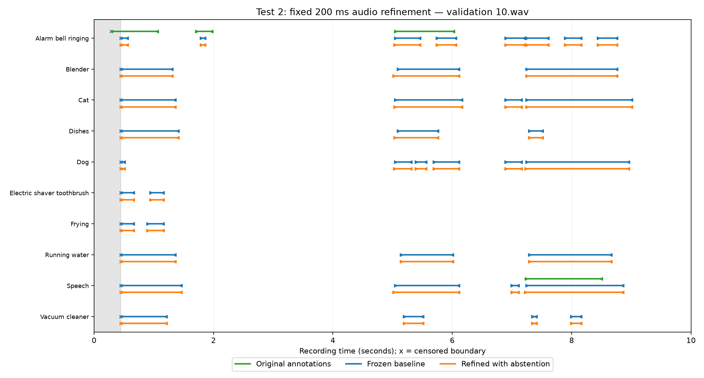

Overview
We are building a sound-event detection system shared between an Arduino Nano 33 BLE Sense running Zephyr and a laptop. The MCU sends compact audio features instead of continuously transmitting raw audio. The laptop detects events and estimates their start and end times. We will compare reporting immediately, waiting for future features, and requesting original audio.
Research question: when should the receiver report a causal prediction, wait for bounded future context, or retrieve expiring historical audio to improve event boundaries within communication budgets and deadlines?
System and current progress
- MCU: capture or replay audio, retain recent PCM samples, run a small CNN encoder, and return requested segments. Deployment is planned.
- Laptop: a causal GRU gives the initial prediction. Offline causal and audio/context refinement code exists; the bounded-window BiGRU adaptation is planned; a separate official full-window model runs offline.
- Controller (planned): choose REPORT, LOOKAHEAD or REFINE using expected benefit, delay, bytes, buffer expiry and reporting time. We will compare the paths before building the selector.
The current offline pipeline uses 16 kHz mono audio, 500 ms input windows, a 50 ms hop, and ten activity labels for the latest 50 ms. The baseline encoder produces 32D features; the existing refiner uses 200 ms of audio.
- REPORT: submit the current causal GRU result.
- LOOKAHEAD: wait a bounded horizon, then use a BiGRU on features actually received to predict the original target interval.
- REFINE: retrieve a PCM segment and use the audio/context refiner. The refiner remains part of the proposal.
| Environment | Current status |
|---|---|
| Offline Python | Dataset loaders, CNN/GRU, refinement and context-only control implemented. |
| Zephyr native_sim + Python | Course smoke/queue examples ran locally; project audio integration is planned. |
| Nano + Zephyr + laptop over USB | Course acoustic firmware compiled locally; project board execution is not yet verified. |
Pretrained BiGRU pilot — November 7: on a new fixed 64-recording DCASE2019 subset, the frozen official CNN+BiGRU achieved 39.72% frame micro F1 (precision 82.74%, recall 26.13%) at threshold 0.5 without smoothing. Four classes had zero F1. Median CPU compute was 23.6 ms per full 10-second input; waiting and communication are excluded. This uses future context and is not a same-data comparison with the old model. Methods, class results and limitations.
Course setup checks are separate from project results. Native_sim does not measure Nano execution speed, radio performance or energy. The original training/evaluation runners and checkpoints are not included yet.
Preliminary results — November 2, 2026
Offline comparison on 117 eligible matched boundaries from 32 validation recordings. The initial baseline was trained on 128 recordings; refinement used separate training recordings (192 fitting, 64 development). All methods use the same initial matched event pairs and censoring exclusions, with abstentions retained.
| Method | Boundary MAE (lower is better) |
|---|---|
| Initial estimate | 380.2 ms |
| Audio + context refinement | 373.6 ms |
| Context-only correction | 372.4 ms |
Interpretation: extra audio helped on some captured boundaries, but did not outperform context-only overall. Event detection did not improve; 693 of 762 initial predicted events were unmatched. These matched-boundary timing scores do not include the full cost of false and missed events.
There were 1,382 complete 200 ms retrievals, costing 8,844,800 PCM payload bytes; 1,263 requests came from unmatched predictions. Headers and retries were excluded. Results use one seed and a small synthetic subset, with only ten captured offsets. Buffer expiry and reporting deadlines were not evaluated.

Read the full methods, results and limitations. These are preserved feasibility results, not new measurements.
Next steps and evaluation
- Recover the original runners, manifests and checkpoints; reproduce and improve the causal baseline.
- Compare causal GRU, bounded-window BiGRU, context-only correction and PCM refinement with the same encoder and controlled model capacity.
- Implement finite PCM history and USB retrieval; verify overwritten, future and wraparound requests, then measure costs on the Nano.
- Measure whether different paths help different cases, then test a simple resource-aware selector. If one fixed path dominates, simplify and report it.
Compare at matched reporting budgets and explicit byte budgets under controlled link conditions. Count waiting, transfer, queueing and computation. Measure timely event quality, boundary error, bytes, latency, deadline misses and MCU resources. An offline oracle is analysis only; full-recording BiGRU predictions are not online results.
Minimum target: a working Nano/laptop USB prototype. Paced recording replay on the physical MCU is the fallback for microphone integration. The main research risk is insufficient complementary benefit from future context and extra audio.
Checkpoint 3: November 12, 2026, 5:14 p.m., Los Angeles time. Initial slides are due November 10 at 4 p.m. The checkpoint PDF is not yet available.
Data and references
- DCASE2019 task 4 synthetic data: ten-second generated soundscapes. The team reports 2,045 recordings; archive contents and original split manifests still need local verification.
- Course Zephyr toolchain and examples.
- Compression at the Edge for Energy- and Bandwidth-Efficient Industrial Audio Analysis (2025). Evaluate compact audio through downstream quality and communication cost.
- Communication-Efficient Multi-Modal Edge Inference via Uncertainty-Aware Distributed Learning (2026, preprint). Use uncertainty-guided feedback as a retrieval baseline.
- Wireless Evidence Acquisition for Multimodal Inference Constrained by Temporal Windows (2026, preprint). Balance evidence value against acquisition time and cost.
- Sound Event Bounding Boxes (Interspeech 2024). Separate event confidence from onset/offset estimates; account for lookahead online.
- Convolutional Recurrent Neural Networks for Polyphonic Sound Event Detection (2017). Provides the CNN/recurrent backbone idea; our policy comparisons keep it fixed.
- On Calibration of Modern Neural Networks (ICML 2017). Check confidence reliability before using it to request more audio.
- SPINN: Synergistic Progressive Inference of Neural Networks over Device and Cloud (MobiCom 2020). Adaptive inference scheduling is a starting point, not our novelty claim.
- A Sequential Audio Spectrogram Transformer for Real-Time Sound Event Detection (EUSIPCO 2024). Future context must be evaluated together with its waiting cost.
Paper summaries and how we plan to build on each idea.
Our proposed focus is choosing future features or expiring historical audio for timely boundaries. Its benefit remains to be evaluated; we do not claim that adaptive inference or lookahead is new.